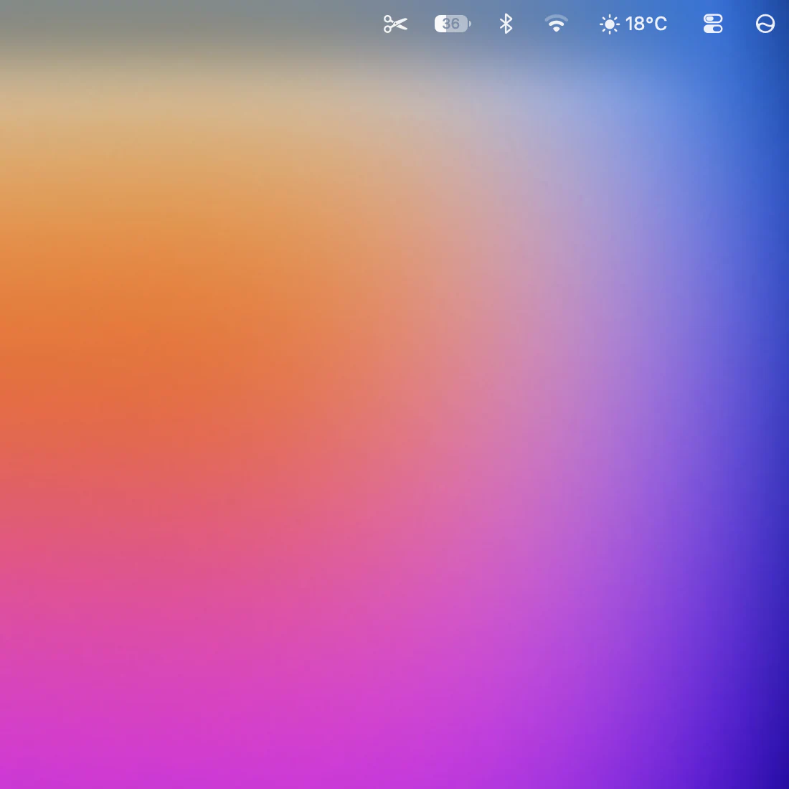
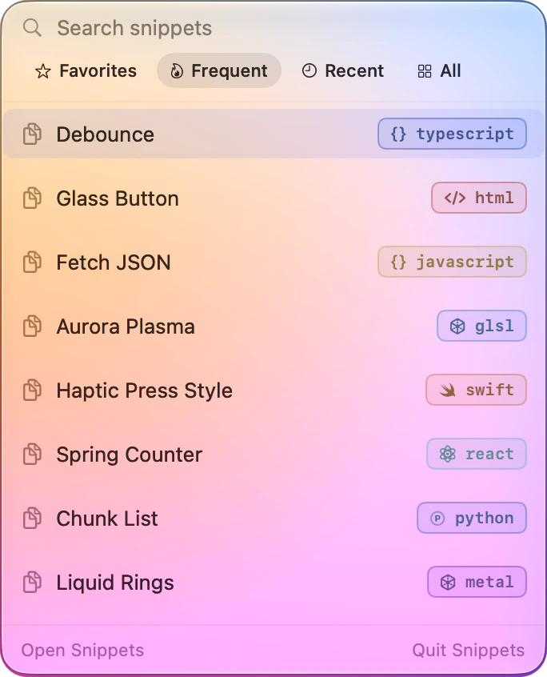
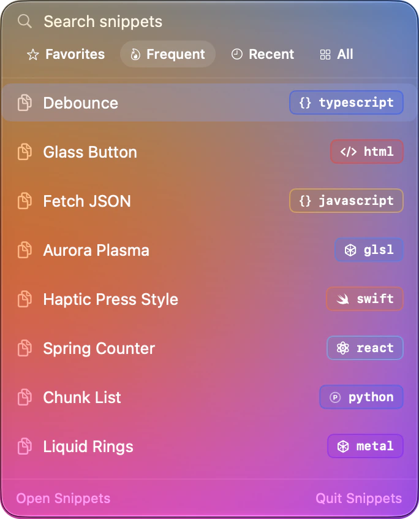
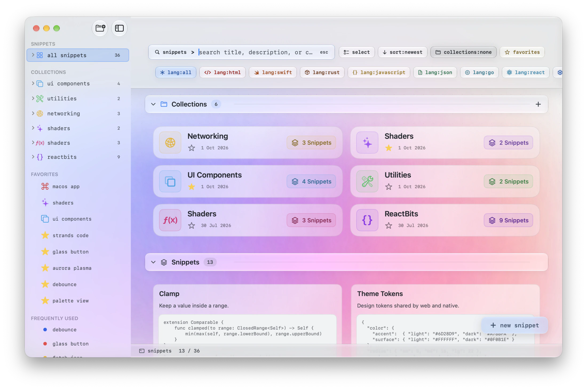
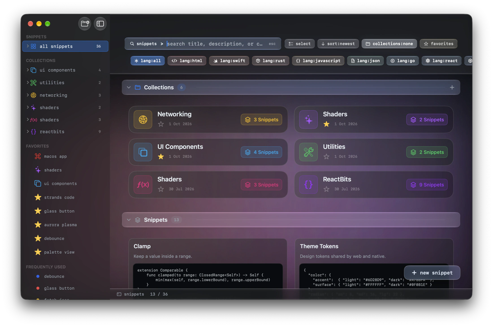
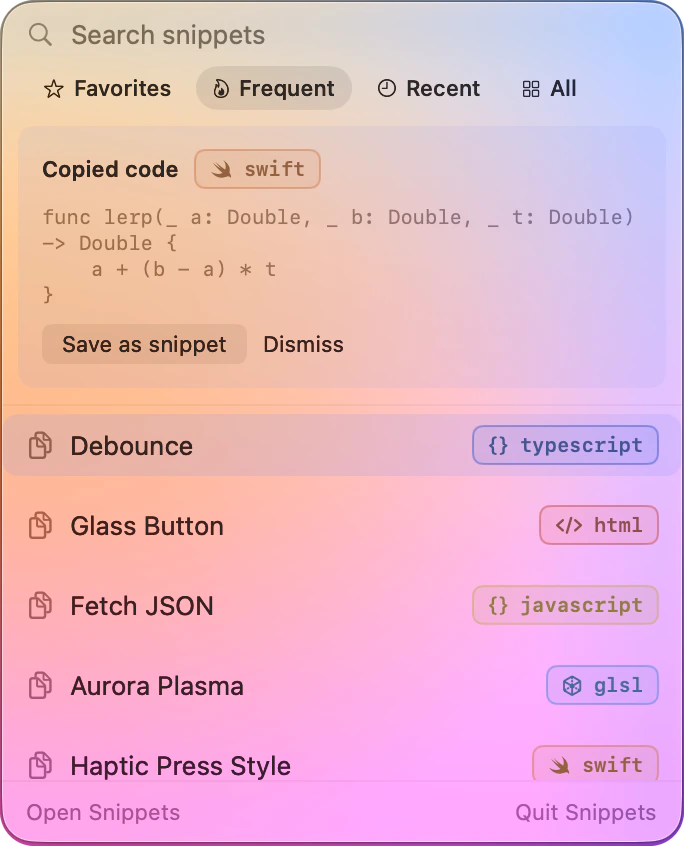
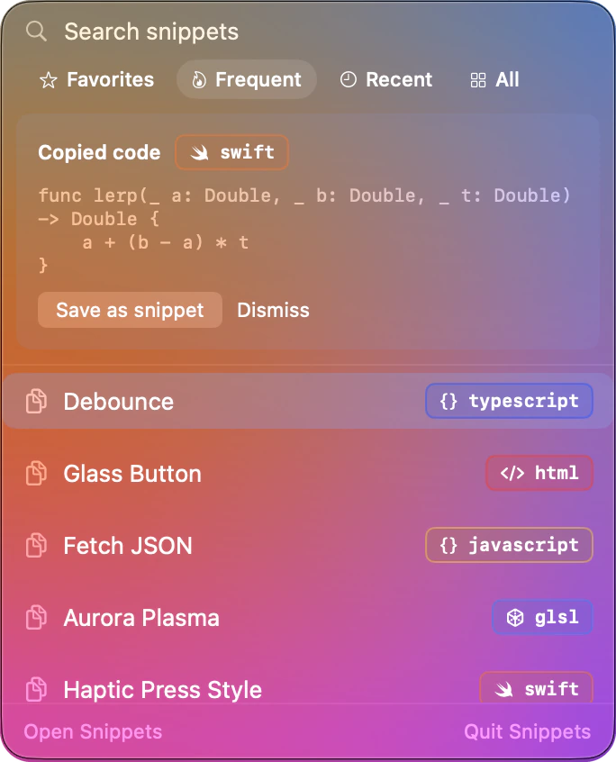

// quick copy
Copy without switching apps.
Click the scissors in the menu bar, type a few letters, and press return. Your snippet is on the clipboard, and you never left what you were doing.



// snippets for macOS
Save it once, find it in a keystroke, and watch it run right next to the source. A free, native Mac app. Everything stays on your Mac.
Snippets is available to download now


Previews run live for all of these, and Snippets keeps and highlights many more.
// preview
Web code renders in a live view, Metal shaders run on the GPU, and Swift compiles with your own Xcode. Expose parameters and drag sliders to tune the result while you watch.
#Preview blocks render exactly as in Xcode// organize
Nest collections, star favorites, and filter by language in one tap. Search looks through titles, descriptions and the code itself.
// quick copy
Click the scissors in the menu bar, type a few letters, and press return. Your snippet is on the clipboard, and you never left what you were doing.



// capture
Turn it on, and when you copy code in another app, Snippets offers to keep it. Password managers’ private copies are always ignored.


// and also
Create, find, copy, open and favorite snippets from your own shortcuts.
Views, button styles and console programs, built with the Xcode you already have.
Link a helper to the snippet that uses it, and they preview together.
Move your whole library, or one collection, as a single .snippets file.
Delete freely. Snippets go to Trash first, and come back with one click.
Language, collection and favorite filters, combined with full-text search.
// privacy
No accounts, no analytics, no tracking. Your library lives on your Mac, and Snippets never sends it anywhere.
Free to use, at home and at work. If it saves you time, you can support its development.
Snippets is available to download now
Double-click Snippets.dmg in your Downloads folder.
Drop the Snippets icon onto the Applications folder.
Launch it from Applications or Spotlight. A short tour shows you around.
By downloading you agree to the License Agreement. Swift previews need Xcode installed.